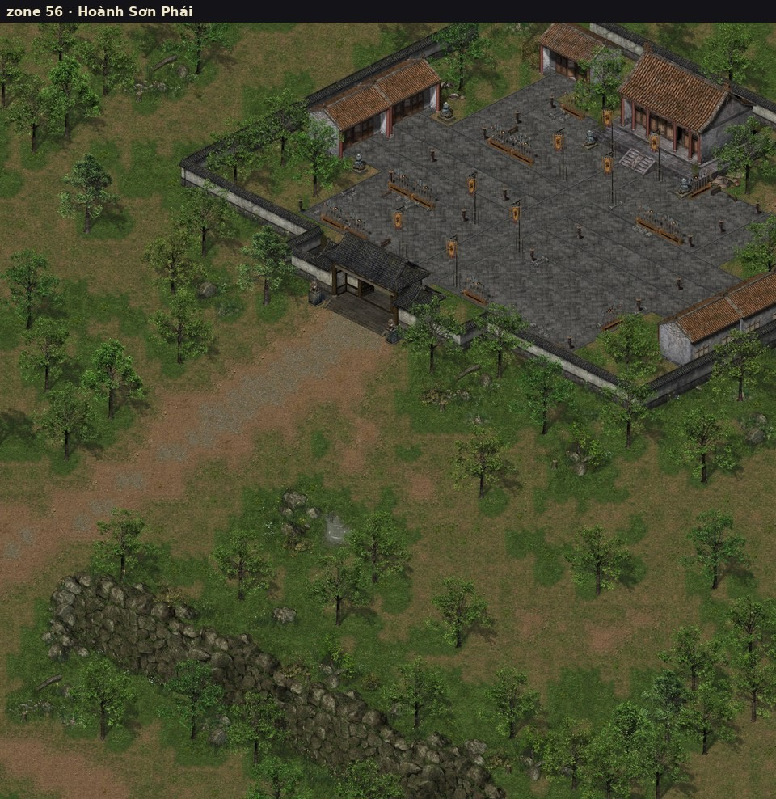
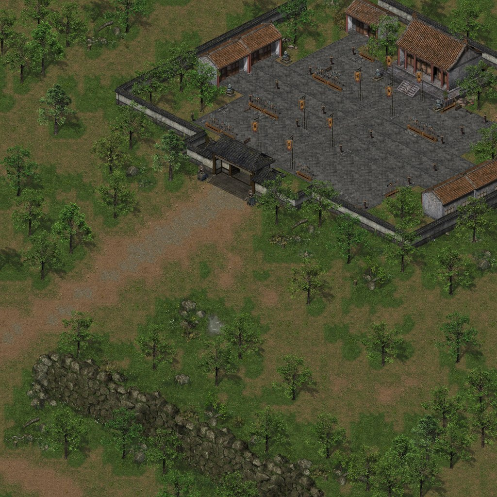
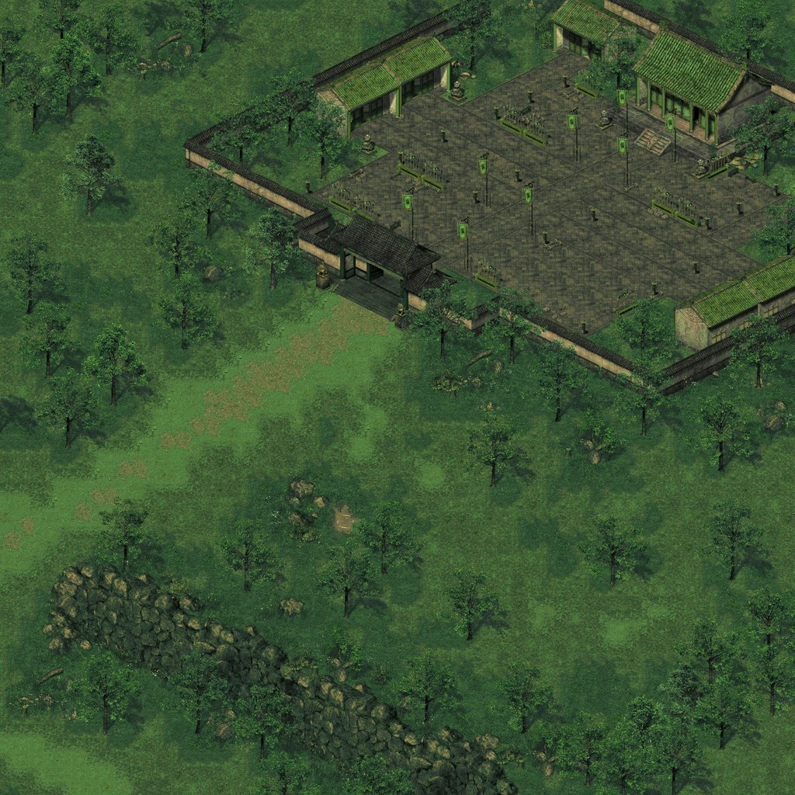
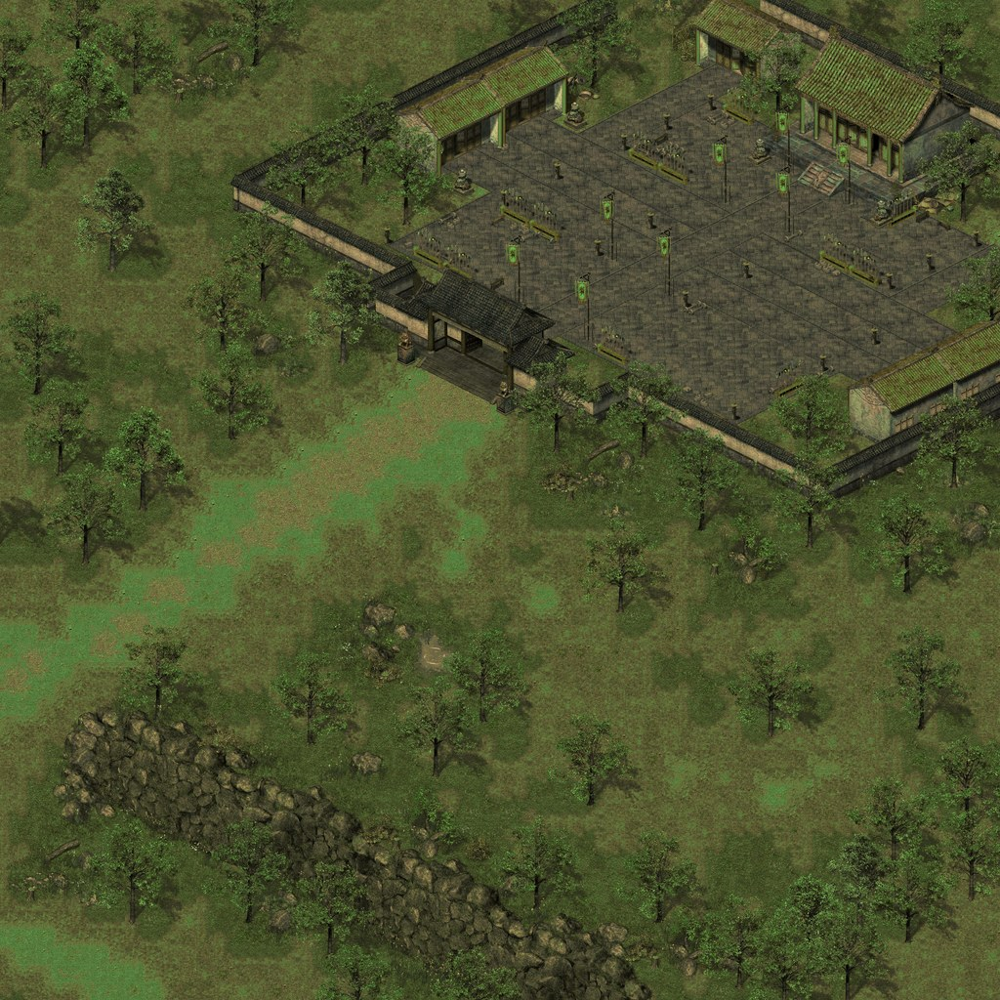
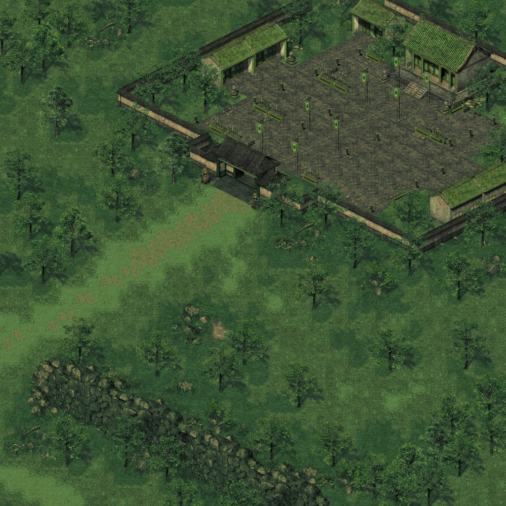
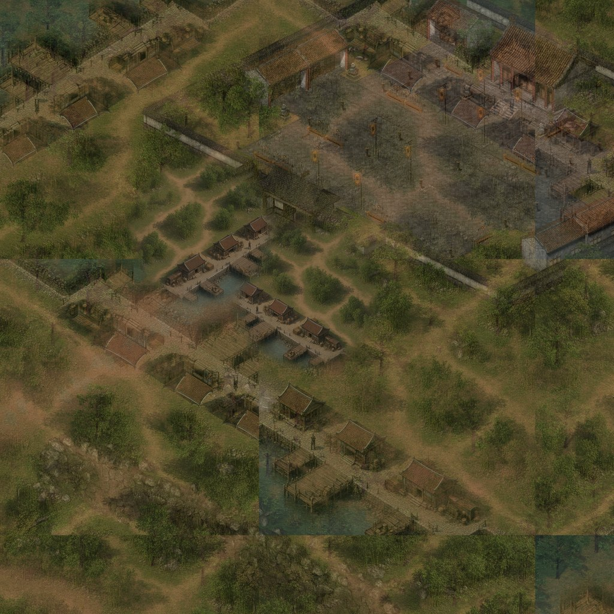
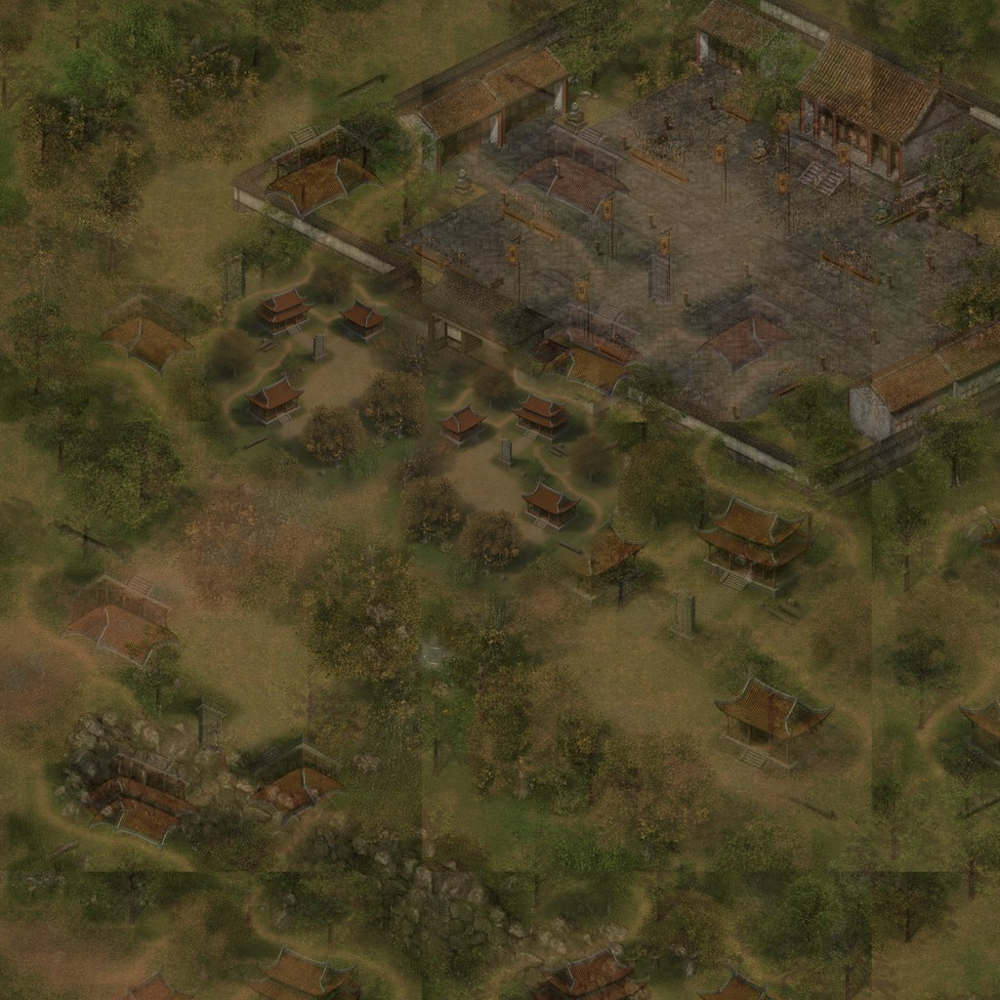
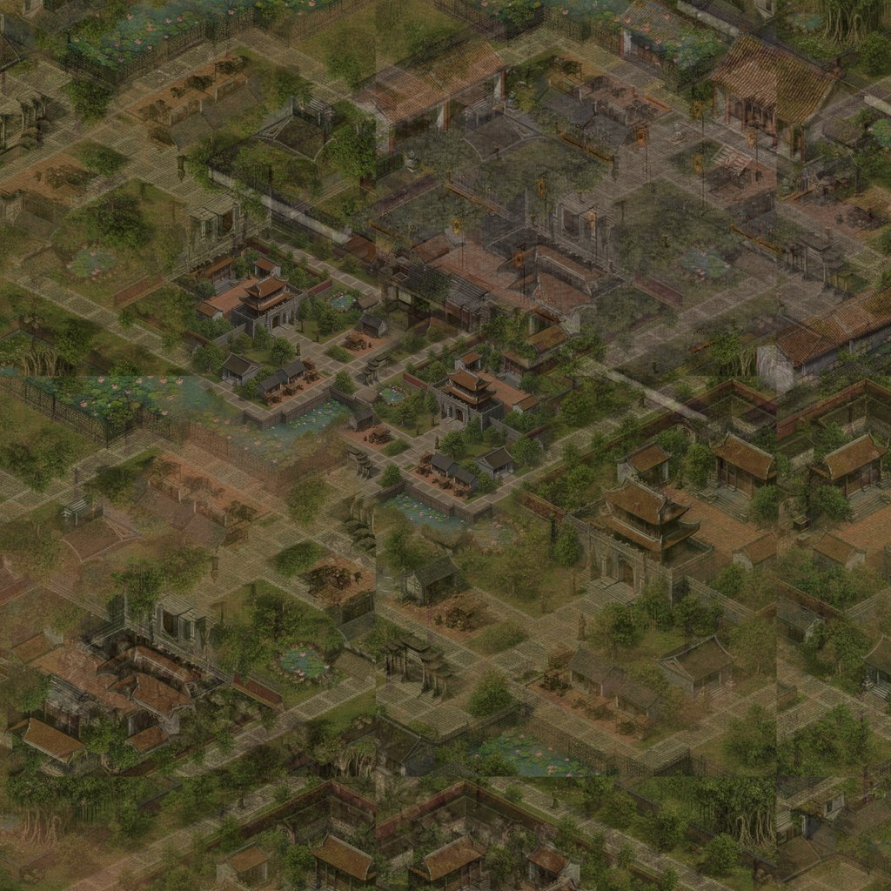
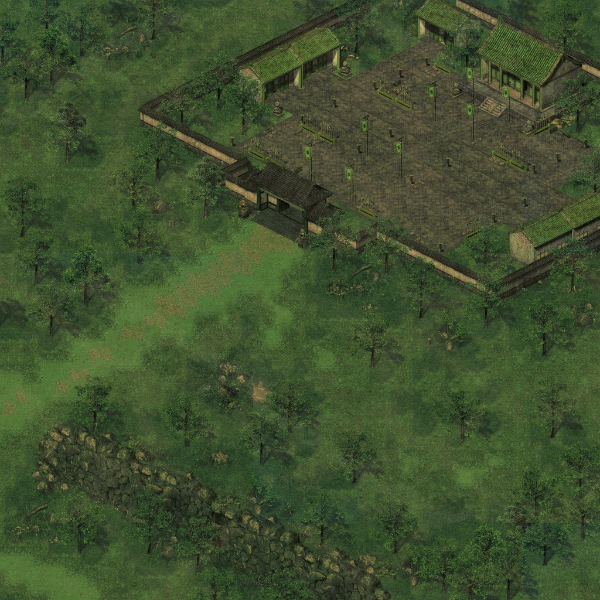
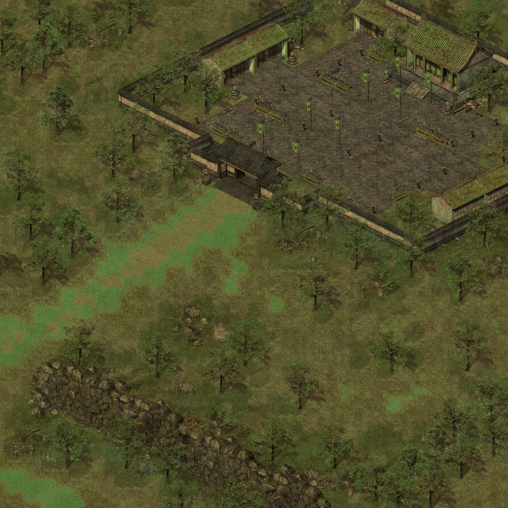

Zone 56 · Hoành Sơn Phái / Vân Đồn — preview Trần (chưa deploy)
Click ảnh thumb để mở file JPG full (3584×3584) trong thư mục này. Chọn slug (vd. 01-reskin-van-don) để áp vào img/z/56.jpg.

Ảnh tham chiếu (Hoành Sơn Phái gốc)

00 · Map gốc VLTK
Giữ bố cục / vật cản jmo.js
01-reskin-van-don
Reskin Trần · tông Vân Đồn (nước/xanh)02-reskin-warm
Reskin Trần · gạch/ mái ấm
03-reskin-lush
Reskin Trần · rừng xanh Côn Sơn
04-reskin-mist
Reskin Trần · sương mù nhẹ
05-compose-van-don
Ghép texture · tran-van-don-map
06-compose-con-son
Ghép texture · tran-con-son-map
07-compose-thang-long
Ghép texture · tran-thang-long-map
08-hybrid-water-van-don
Pha reskin + AI Vân Đồn (layout ưu tiên)
09-hybrid-warm-thang-long
Pha reskin ấm + AI Thăng Long